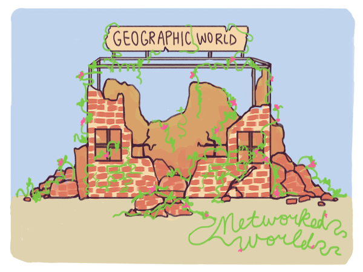

Tinkering versus Goals
Upgrading a planet-scale computer is, of course, a more complex matter than trading in an old smartphone for a new one, so it is not surprising that it has already taken us nearly half a century, and we're still not done.

Since 1974, the year of peak centralization, we have been trading in a world whose functioning is driven by atoms in geography for one whose functioning is driven by bits on networks. The process has been something like vines growing all over an aging building, creeping in through the smallest cracks in the masonry to establish a new architectural logic.
The difference between the two is simple: the geographic world solves problems in goal-driven ways, through literal or metaphoric zero-sum territorial conflict. The networked world solves them in serendipitous ways, through innovations that break assumptions about how resources can be used, typically making them less rivalrous and unexpectedly abundant.
Goal-driven problem-solving follows naturally from the politician's syllogism: we must do something; this is something; we must do this. Such goals usually follow from gaps between reality and utopian visions. Solutions are driven by the deterministic form-follows-function1 principle, which emerged with authoritarian high-modernism in the early twentieth century. At its simplest, the process looks roughly like this:- Problem selection: Choose a clear and important problem
- Resourcing: Capture resources by promising to solve it
- Solution: Solve the problem within promised constraints
We have already explored the limitations of this approach in previous essays, so we can just summarize them here. Choosing a problem based on "importance" means uncritically accepting pastoral problem frames and priorities. Constraining the solution with an alluring "vision" of success means limiting creative possibilities for those who come later. Innovation is severely limited: You cannot act on unexpected ideas that solve different problems with the given resources, let alone pursue the direction of maximal interestingness indefinitely. This means unseen opportunity costs can be higher than visible benefits. You also cannot easily pursue solutions that require different (and possibly much cheaper) resources than the ones you competed for: problems must be solved in pre-approved ways.
This is not a process that tolerates uncertainty or ambiguity well, let alone thrive on it. Even positive uncertainty becomes a problem: an unexpected budget surplus must be hurriedly used up, often in wasteful ways, otherwise the budget might shrink next year. Unexpected new information and ideas, especially from novel perspectives -- the fuel of innovation -- are by definition a negative, to be dealt with like unwanted interruptions. A new smartphone app not anticipated by prior regulations must be banned.
In the last century, the most common outcome of goal-directed problem solving in complex cases has been failure.
The networked world approach is based on a very different idea. It does not begin with utopian goals or resources captured through specific promises or threats. Instead it begins with open-ended, pragmatic tinkering that thrives on the unexpected. The process is not even recognizable as a problem-solving mechanism at first glance:- Immersion in relevant streams of ideas, people and free capabilities
- Experimentation to uncover new possibilities through trial and error
- Leverage to double down on whatever works unexpectedly well
What would be seemingly pointless disruption in an unchanging utopia becomes a way to stay one step ahead in a changing environment. This is the key difference between the two problem-solving processes: in goal-driven problem-solving, open-ended ideation is fundamentally viewed as a negative. In tinkering, it is a positive.
The first phase -- inhabiting relevant streams -- can look like idle procrastination on Facebook and Twitter, or idle play with cool new tools discovered on Github. But it is really about staying sensitized to developing opportunities and threats. The perpetual experimentation, as we saw in previous essays, feeds via bricolage on whatever is available. Often these are resources considered "waste" by neighboring goal-directed processes: a case of social costs being turned into assets. A great deal of modern data science for instance, begins with "data exhaust": data of no immediate goal-directed use to an organization that would normally get discarded in an environment of high storage costs. Since the process begins with low-stakes experimentation, the cost of failures is naturally bounded. The upside, however, is unbounded: there is no necessary limit to what unexpected leveraged uses you might discover for new capabilities.
Tinkerers -- be they individuals or organizations -- in possession of valuable but under-utilized resources tend to do something counter-intuitive. Instead of keeping idle resources captive, they open up access to as many people as possible, with as few strings attached as possible, in the hope of catalyzing spillover tinkering. Where it works, thriving ecosystems of open-ended innovation form, and steady streams of new wealth begin to flow. Those who share interesting and unique resources in such open ways gain a kind of priceless goodwill money cannot buy. The open-source movement, Google's Android operating system, Big Data technology, the Arduino hardware experimentation kit and the OpenROV underwater robot all began this way. Most recently, Tesla voluntarily opened up access to its electric vehicle technology patents under highly liberal terms compared to automobile industry norms.
Tinkering is a process of serendipity-seeking that does not just tolerate uncertainty and ambiguity, it requires it. When conditions for it are right, the result is a snowballing effect where pleasant surprises lead to more pleasant surprises.
What makes this a problem-solving mechanism is diversity of individual perspectives coupled with the law of large numbers (the statistical idea that rare events can become highly probable if there are enough trials going on). If an increasing number of highly diverse individuals operate this way, the chances of any given problem getting solved via a serendipitous new idea slowly rises. This is the luck of networks.
Serendipitous solutions are not just cheaper than goal-directed ones. They are typically more creative and elegant, and require much less conflict. Sometimes they are so creative, the fact that they even solve a particular problem becomes hard to recognize. For example, telecommuting and video-conferencing do more to "solve" the problem of fossil-fuel dependence than many alternative energy technologies, but are usually understood as technologies for flex-work rather than energy savings.
Ideas born of tinkering are not targeted solutions aimed at specific problems, such as "climate change" or "save the middle class," so they can be applied more broadly. As a result, not only do current problems get solved in unexpected ways, but new value is created through surplus and spillover. The clearest early sign of such serendipity at work is unexpectedly rapid growth in the adoption of a new capability. This indicates that it is being used in many unanticipated ways, solving both seen and unseen problems, by both design and "luck".
Venture capital is ultimately the business of detecting such signs of serendipity early and investing to accelerate it. This makes Silicon Valley the first economic culture to fully and consciously embrace the natural logic of networks. When the process works well, resources flow naturally towards whatever effort is growing and generating serendipity the fastest. The better this works, the more resources flow in ways that minimize opportunity costs.
From the inside, serendipitous problem solving feels like the most natural thing in the world. From the perspective of goal-driven problem solvers, however, it can look indistinguishable from waste and immoral priorities.
This perception exists primarily because access to the luck of sufficiently weak networks can be slowed down by sufficiently strong geographic world boundaries (what is sometimes called bahramdipity: serendipity thwarted by powerful forces). Where resources cannot stream freely to accelerate serendipity, they cannot solve problems through engineered luck, or create surplus wealth. The result is growing inequality between networked and geographic worlds.
This inequality superficially resembles the inequality within the geographic world created by malfunctioning financial markets, crony capitalism and rent-seeking behaviors. As a result, it can be hard for non-technologists to tell Wall Street and Silicon Valley apart, even though they represent two radically different moral perspectives and approaches to problem-solving. When the two collide on highly unequal terms, as they did in the cleantech sector in the late aughts, the overwhelming advantage enjoyed by geographic-world incumbents can prove too much for the networked world to conquer. In the case of cleantech, software was unable to eat the sector and solve its problems in large part due to massive subsidies and protections available to incumbents.
But this is just a temporary state. As the networked world continues to strengthen, we can expect very different outcomes the next time it takes on problems in the cleantech sector.
As a result of failures and limits that naturally accompany young and growing capabilities, the networked world can seem "unresponsive" to "real" problems.
So while both Wall Street and Silicon Valley can often seem tone-deaf and unresponsive to pressing and urgent pains while minting new billionaires with boring frequency, the causes are different. The problems of Wall Street are real, and symptomatic of a true crisis of social and economic mobility in the geographic world. Those of Silicon Valley on the other hand, exist because not everybody is sufficiently plugged into the networked world yet, limiting its power. The best response we have come up with for the former is periodic bailouts for "too big to fail" organizations in both the public and private sector. The problem of connectivity on the other hand, is slowly and serendipitously solving itself as smartphones proliferate.
This difference between the two problem-solving cultures carries over to macroeconomic phenomena as well.
Unlike booms and busts in the financial markets, which are often artificially created, technological booms and busts are an intrinsic feature of wealth creation itself. As Carlota Perez notes, technology busts in fact typically open up vast new capabilities that were overbuilt during booms. They radically expand access to the luck of networks to larger populations. The technology bust of 2000 for instance, radically expanded access to the tools of entrepreneurship and began fueling the next wave of innovation almost immediately.
The 2007 subprime mortgage bust, born of deceit and fraud, had no such serendipitous impact. It destroyed wealth overall, rather than creating it. The global financial crisis that followed is representative of a broader systematic crisis in the geographic world.
[1] The principle appears to have been first stated by the architect Louis Sullivan in 1896.
[2] Scott Adams, The Dilbert Principle, 1997.